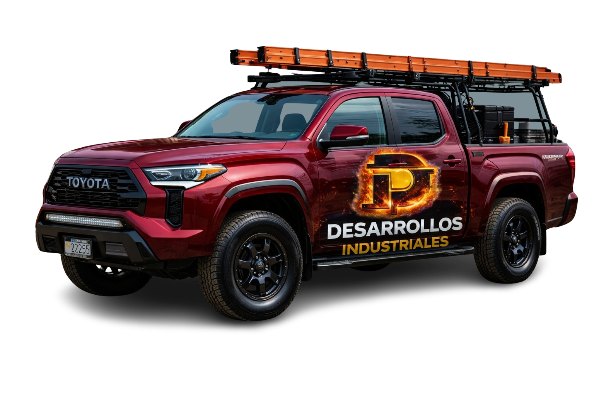

Restauración Profesional de
Daños por Incendio e Inundaciones
Puerto Rico's premier fire damage restoration company.
Trabajamos directamente con tu aseguradora. Disponibles 24/7.
Restauración Completa Post-Incendio
Manejamos cada etapa del proceso de restauración, desde la emergencia hasta la reconstrucción final.
Descontaminación de Humo y Hollín
Eliminamos completamente humo, hollín y olores con equipo industrial especializado y técnicas avanzadas. El humo invisible sigue dañando tu propiedad y tu salud cada día que pasa.
- Utilización de químicos no nocivos
- Descontaminación del Aire
- Eliminación de olores
Mitigación de Emergencia
Respuesta inmediata 24/7. Aseguramos la propiedad, removemos escombros peligrosos y prevenimos daños adicionales.
- Respuesta en menos de 24 horas
- Alcance de daños para rápida respuesta
- Remoción de escombros
Daños por Agua
Restauramos los daños causados por el agua del sistema contra incendios con extracción y secado industrial.
- Extracción de agua
- Secado industrial
- Prevención de moho
- Mitigación de hongos
Restauración de Estructuras
Reconstruimos desde los cimientos: techos, paredes, pisos, electricidad, plomería y acabados completos.
- Techos y paredes
- Stain Bloquer
- Restauración de puertas y ventanas
¡Reclamamos por tí!
Trabajamos directamente con tu aseguradora. Manejamos toda la documentación y negociación mientras usted descansa.
- Coordinación con ajustadores
- Documentación fotográfica
- Estimados detallados
Polizas de Contenido
Recuperamos, limpiamos y restauramos muebles, documentos, electrónicos y objetos de valor personal.
- Inventario detallado
- Restauración de documentos
- Almacenamiento seguro
Estamos Contigo, No Contra Ti
Cuando más nos necesitas, aquí estamos — de tu lado, desde el primer día.

Cuando tu hogar sufre daños, no solo enfrentas una reparación…
enfrentas papeleo, burocracia y tiempo invertido com la aseguradora.
En Desarrollos Industriales LLC estamos para ayudarte, orientarte y solucionarte. Luchamos para que recibas lo que realmente mereces.
Mientras tú te enfocas en escoger tus nuevos muebles, ventanas o puertas… nosotros nos encargamos del proceso, la reclamación y las gestiones con la aseguradora.
Porque nosotros estamos contigo… no del lado de los grandes intereses.
Desarrollos Industriales LLC
Recupera tu casa. Recupera tu tranquilidad. Rápido.
¡Proceso Simple, Transparente y Libre de Costos!
Llamada de Emergencia
Llámanos o escríbenos por WhatsApp. Respondemos en 24 horas.
Inspección Gratuita
Llegamos a la propiedad, evaluamos los daños y documentamos todo para el proceso de reclamación.
Coordinación con Aseguradora
Contactamos directamente a tu aseguradora, presentamos la documentación y manejamos el claim por ti.
Restauración Completa
Ejecutamos el plan de restauración con los más altos estándares de calidad hasta la entrega final.
Trabajamos con las principales Aseguradoras de Puerto Rico
¡Siempre poniendo al asegurado primero!
Manejamos reclamaciones de seguros de propiedad por daños de incendio, fuego, inundación y moho con todas las aseguradoras de Puerto Rico. Te ayudamos a entender tu póliza, tu límite de cubierta y tu póliza de contenido — sin costo para ti. Estimados de daños gratis. Asistencia de reclamaciones incluida.
Radar de Emergencias de Incendio en Puerto Rico
Datos satelitales en tiempo real de focos de calor activos en Puerto Rico. Fuente: NASA FIRMS / VIIRS.
Datos actualizados cada 12 horas desde satélites VIIRS (NASA). Hora: --
Todo lo que necesitas saber
Respuestas claras sobre restauración por incendio, inundación y reclamaciones de seguros en Puerto Rico.
¿Qué debo hacer después de un incendio en mi casa?
Primero, garantiza la seguridad de todos y llama al 911 si hay heridos. Luego contáctanos de inmediato — respondemos en 24 horas. Documentamos los daños, aseguramos la propiedad y activamos el proceso de reclamación y restauración de inmediato. No muevas ni limpies nada sin documentar primero.
¿Qué hace una empresa de restauración por incendio?
Una empresa como Desarrollos Industriales LLC evalúa y documenta los daños estructurales y de contenido, realiza la limpieza de humo y hollín, elimina olores, ejecuta el secado estructural si hubo agua del sistema contra incendios, reconstruye la estructura y gestiona la reclamación ante tu aseguradora en Puerto Rico.
¿Qué cubre el seguro de propiedad por daños de incendio?
La mayoría de pólizas en Puerto Rico cubren: daños estructurales por fuego, restauración de daños por humo y hollín, daños por agua del sistema contra incendios y pólizas de contenido (muebles, electrónicos, documentos). Te ayudamos a reclamar el máximo con las aseguradoras.
¿Qué hacer si se inundó mi casa en Puerto Rico?
Actúa rápido — el moho puede aparecer en 24–48 horas. Corta la electricidad si es seguro, documenta con fotos y llámanos de inmediato. Realizamos extracción de agua, secado estructural industrial, prevención de moho y gestionamos la reclamación por daños por inundación en Puerto Rico con tu aseguradora.
¿Qué incluye la restauración de daños por humo y hollín?
Incluye limpieza completa de todas las superficies afectadas, eliminación de olores con equipo industrial especializado, descontaminación del aire interior, tratamiento de paredes, techos, ductos y restauración de muebles y objetos personales. El humo invisible continúa dañando materiales y la salud si no se trata correctamente.
¿Cómo funciona la reclamación de seguro por incendio o inundación?
Nosotros manejamos todo: inspeccionamos y documentamos los daños, preparamos el estimado detallado, coordinamos con el ajustador de tu aseguradora y negociamos para que recibas el máximo de tu póliza. Trabajamos con las aseguradoras.
¿Trabajan con MAPFRE, SSS, Triple-S, USIC y Universal Insurance?
Sí. Trabajamos con todas las aseguradoras de propiedad en Puerto Rico: MAPFRE Puerto Rico, SSS / Triple-S Propiedad, Cooperativa de Seguros Múltiples, USIC, Universal Insurance, Universal Group, One Alliance y Multinational. Manejamos toda la documentación, el estimado de daños y la negociación para que recibas el máximo de tu póliza.
¿Qué es la póliza de contenido y la póliza de contingencia?
La póliza de contenido cubre los bienes dentro de tu propiedad: muebles, electrodomésticos, electrónicos, ropa y documentos dañados por fuego, inundación o moho. La póliza de contingencia cubre situaciones adicionales fuera de la póliza principal. Te ayudamos a entender tu límite de cubierta y a reclamar cada centavo que te corresponde, sin costo para ti.
¿Cómo evito que la aseguradora me pague menos de lo que merezco?
Las aseguradoras a veces ofrecen liquidaciones por debajo del valor real. Llámanos antes de aceptar cualquier oferta. Preparamos un estimado detallado de todos los daños — estructura, contenido y daños por moho — y negociamos directamente con MAPFRE, SSS, Triple-S, Cooperativa, USIC, Universal Insurance y más. Nuestra asistencia de reclamaciones es completamente gratuita — te representamos sin costo de bolsillo.
¿Sufrió un Incendio o Inundación? Estamos Aquí
No esperes. Cada minuto cuenta. Contáctanos ahora para una inspección gratuita de emergencia en Puerto Rico.